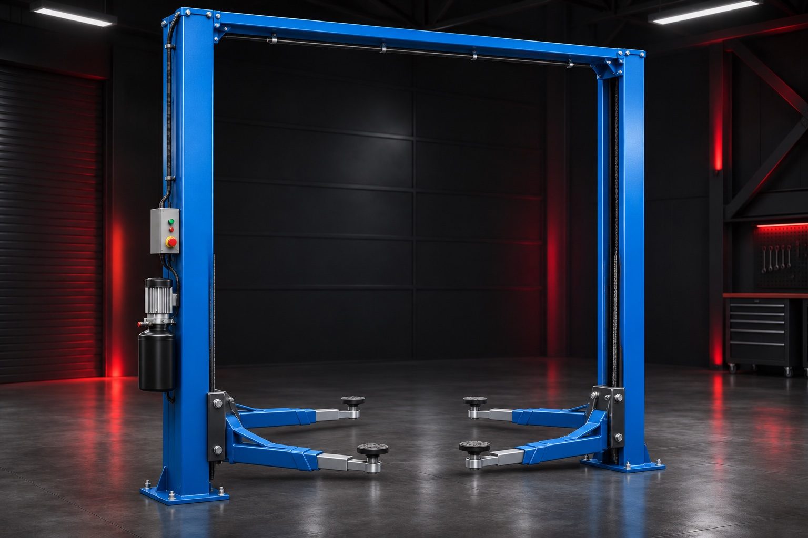
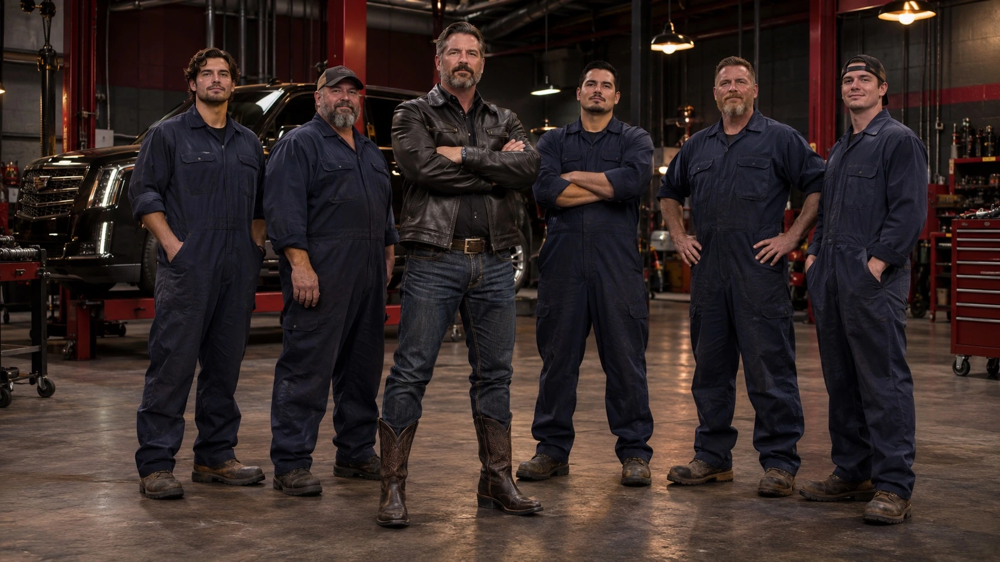
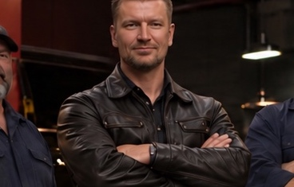
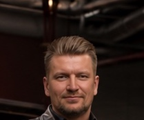
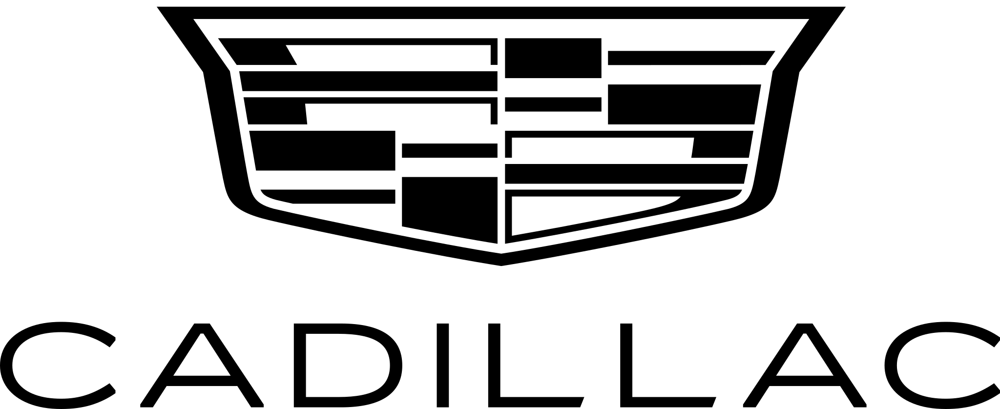
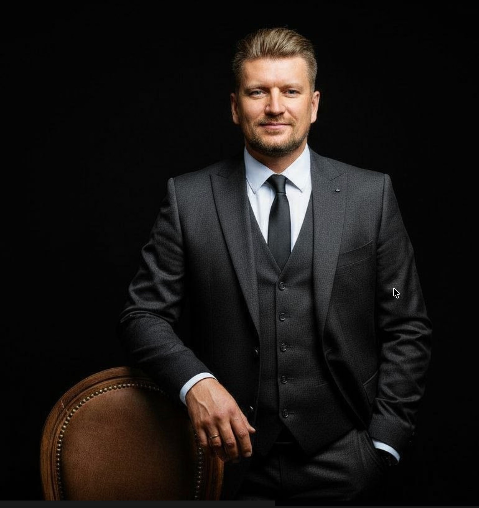

ВНЕДОРОЖНИК
01Escalade
Поколения модели: I · II · III · IV · V
HEAVY MOTORS · CADILLAC · CHEVROLET · HUMMER · GMC · БРОНЕВИКИ
Двигатель, коробка передач, ходовая и электрика. Внимание к вашему автомобилю в каждой детали.
ВАШ CADILLAC
Работаем с разными поколениями Cadillac. Возможность ремонта уточняйте по году выпуска и комплектации.
Поколения модели: I · II · III · IV · V
Поколения модели: I · II
Поколения модели: I
Поколения модели: II
Поколения модели: I
Поколения модели: I
Поколения модели: I · II
ВАШ АВТОМОБИЛЬ
Расскажите о вашем автомобиле — уточним возможность ремонта.
Поколения модели: I · II · III · IV · V
Поколения модели: VIII · IX · X · XI · XII
Поколения модели: I · обновление 2003
Поколения модели: I · II · III · IV
Поколения модели: II
Поколения модели: I · II · III · IV
Поколения модели: I · II · III
ВАШ АВТОМОБИЛЬ
Расскажите о вашем автомобиле — уточним возможность ремонта.
Поколения модели: I
Поколения модели: I
Поколения модели: I
ВАШ АВТОМОБИЛЬ
Расскажите о вашем автомобиле — уточним возможность ремонта.
Поколения модели: I · II · III · IV · V
Поколения модели: I · II · III · IV · V
Поколения модели: I · II · III
Поколения модели: I · обновление 2003
Поколения модели: I · II · III
ВАШ АВТОМОБИЛЬ
Расскажите о вашем автомобиле — уточним возможность ремонта.

ИЛЛЮСТРАЦИЯ ОБОРУДОВАНИЯОБОРУДОВАНИЕ ДЛЯ ТЯЖЁЛЫХ АВТОМОБИЛЕЙ
Для обслуживания бронированных и тяжёлых автомобилей мы используем двухстоечный подъёмник NORDBERG N4122HE-6B.
Перед записью уточним массу автомобиля, габариты и точки подъёма.
ЧТО МЫ ДЕЛАЕМ
От технического обслуживания и ремонта до тюнинга и подбора оригинальных запчастей.
Работы с двигателем и его системами. Объём ремонта определяется по состоянию автомобиля.
Работы с коробкой передач и решение проблем в её работе.
Работы с подвеской и элементами ходовой части автомобиля.
Поиск и устранение неисправностей электрооборудования автомобиля.
Подберём решения для доработки автомобиля с учётом ваших пожеланий и особенностей модели.
Проведём плановое техническое обслуживание вашего автомобиля и уделим внимание важным деталям.
Подберём и закажем оригинальные запчасти для вашего автомобиля у проверенных поставщиков.
Расскажите, что требуется вашему автомобилю, — уточним возможность выполнения работ.
HEAVY MOTORS
Внимание к автомобилю начинается с команды.




HEAVY MOTORS

Heavy Motors — специализированный автосервис американских автомобилей в центре Москвы. Профессиональный ремонт и обслуживание Cadillac, Hummer, Chevrolet, включая бронированные внедорожники.
Полный цикл работ: техническое обслуживание (ТО), компьютерная диагностика, ремонт двигателей, АКПП, трансмиссии, подвески, ходовой части, тормозной системы и электрооборудования. Подбор и заказ оригинальных запчастей.
В сервисе установлен мощный шеститонный подъёмник, позволяющий обслуживать тяжёлые бронированные автомобили.
Heavy Motors — профессиональный подход к ремонту американских автомобилей, современное оборудование и удобное расположение практически в центре Москвы.
Узнать о направлениях ремонта